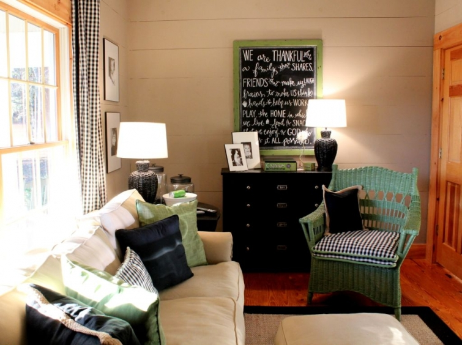
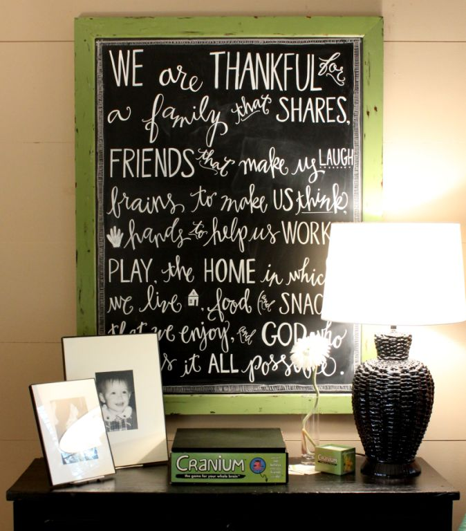

.png)
.PNG)
.PNG)
.PNG)
.PNG)
.PNG)
.JPG)
.JPG)
.PNG)
.PNG)


Before the holiday is gone I wanted to share a short post with you. The last couple of weeks have definitely thrown our schedules off, and I know many of you are ready for Christmas, but I thought you might like seeing the chalkboards from the playroom for Thanksgiving.
I used a chalk pen on these because it is much faster (and easier) than using regular chalk.
We have also updated the game system storage from the hutch on top of a cabinet to open shelves in there. (I know that is not Thanksgiving related, but I thought you might like to see it. :))

So on this Thanksgiving Eve, I am thankful for many things…one of which is my husband’s talent for taking my crazy ideas and turning them into reality. I am also thankful for my children and their fun friends – like this group that was here this afternoon for dessert. (Texas Cake and Gingerbread!)
This photo was taken right before my daughter had to leave to go to an appointment. The rest of the gang was hanging out here when my daughter came back inside crying. She had backed into the car of one of her friends – totally wrecking the driver’s door. I am thankful that her first car wreck injured no one. The car was a relatively new car belonging to her friend’s mother. I am thankful that Meredith’s mom handled the damage to her car with such grace and humor for my daughter. No one would have handled it better. (Thank you, Marny!)
view from the kitchen window
We are truly blessed. I think of one of my husband’s friends, a single guy, who slipped last weekend while delivering a refrigerator to someone. The refrigerator came crashing down on his leg, crushing his ankle. He had surgery on Monday and will be in bed for a number of weeks…followed by an additional surgery later in December. I think of another one of our friends whose wife died with cancer a couple of weeks ago. This will be a tough Christmas season for him. Both of those men were in our wedding. I am so thankful for our health, and our home, and our family. Our children our blessed to have both sets of grandparents able to be a part of their lives.
And I am thankful for all of you. You are probably rushing around preparing food for tomorrow’s Thanksgiving meal, and you may not even see this. But I could not let this opportunity pass by…this opportunity to tell you thank you. Thank you for reading all my wandering thoughts here. Thank you for leaving your comments that make me feel like I am providing something that people enjoy (especially on days when I turn on my computer, and there are three “unsubscribe from Talk of the House” notices. :() Thank you for sending me emails that encourage me to keep on doing whatever this is that I am doing. Thank you for pinning my amateur photos to Pinterest and sharing your blog love out there in this amazing online world.
And although we may have never met in real life, I thank you for your friendship. It means the world to me. Happy Thanksgiving to you and to all those you hold dear.
May you be richly blessed!


.PNG)
Just saw this post AFTER the Thanksgiving crunch……thank you, Kelly. You write such an amazing blog, each of your posts is home-y as well as informative. Even the comments left here are so much fun to read. I love all your pictures, they so highlight whatever the day’s topic is about. Blessings to you and all your family during this holiday season.
Thanks for sharing your beautiful home with us. Some of my best friends are on-line friends. Recently I discovered that one of them is a distant cousin! Maintaining a blog has to be a lot of work and I truly appreciate yours. I often escape here during hectic times at work!
Thankful for you too, Kelly!
I love this blog and learn a lot also!
Love the wreath! You will also have to tell me more about the chalk pen… Happy Thanksgiving!
Thank you for your lovely photos…sorry this is behind but yesterday was truly a wonderful, blessed day and after eleven adults, one toddler, two infants and our two Bearded Collies, Molly and Max, for dinner…I am totally exhausted. Hope you had a wonderful Thanksgiving as well! Loretta
Kelly, thank you for the blessings you so abundantly provide us, your readers and fans. I can’t wait to try the Hot Christmas Punch recipe. It sounds delicious. I think as I decorate the house, I will copy you and try some. Looking forward to more posts about Christmas!
Thanks for mentioning us in your post Mrs. Kelly! I love your blog, your home, your family, and your daughter. I’m extremely thankful to have you all in my life for over ten years now. I hope you all enjoyed your thanksgiving.
Also, the car has become quite the story around my house. No worries- it remains the punchline of many jokes and we can’t help but laugh.
Happy Thanksgiving!
Happy Thanksgiving Kelly! Sorry about your daughter’s fender bender. Thank you for bringing a bright spot to my day each time you have a new post!
Thank you for sharing the beauty of your home, your family and your life with us. I appreciate it and look forward to it, even if I do not always take the time to comment thoughts of appreciation!
We’re here– I for one read blogs I like daily, no matter what! Hold on, have to check the pies in the oven – okay, I’m back!
Tell your daughter she isn’t alone – I sideswiped my brother-in-law’s car while backing out of the garage! Just completely forgot it was in the driveway!
Hope you and yours have a wonderful Thanksgiving.
Love your blog, Kelly!!! You inspire me!!! Happy Thanksgiving!!!!
Thank you for inspiring us to make our homes beautiful, warm, and inviting. Happy Thanksgiving!
Happy Thanksgiving to you all from Canada! Kelly, I remember when my daughter came home crying from being in her first fender bender! After taking in a deep breath, I hugged her and thanked God no one was hurt. A lesson was learned. Although there is much joy at this time of the year, there are so many who grieve as your friends are.
Always a joy to read your posts. Have a wonderful day sharing with your family.
(Love your chalkboard sign, I just may need to buy the special marker!)…By the way, more snow coming our way 🙂
Kelly, my thoughts and prayers are with the two men you mentioned. I am thankful you and your husband are their friends. I am also thankful your daughter’s accident did not involve anyone getting hurt.
Last, but not least, I am SO thankful you are one of my FAVORITE blogs. It educates me, interests me, and gives me inspiration.
Blessings to you and yours this Thanksgiving Holiday!
Take care.
Thank you for sharing with your readers. I love your home and I am still amazed that you are able to do all these beautiful things and teach!, too! As always, I look forward to your next post! Happy thanksgiving!
Such a lovely post – I’m so sorry for your friends. My first (and only) wreck was similar – I was 19. Your home is lovely, as always, and I can’t believe it’s the first time I’ve noticed your game controller storage – love it!! Happy thanksgiving!
This is my first time commenting but I’ve been reading your blog for quite some time. I just wanted to say thank you for all of your inspirational ideas – decorating, entertaining and more – you have a style I admire. Happy Thanksgiving to you and your family!
I am thankful that I checked in and read your Thankful Blog before I say my prayers at the end of another beautiful but rather cool day. Loved your chalkboard list of your family’s things to be thankful for. So sorry about baby girl’s accident– just know she is so upset! Things happen so quickly– big hugs to everyone. Loving thoughts to you and yours as we enter into the most wonderful time of the year–as the song goes. Please know, that I count you as one of my special blessings and you may never know how far your special touch of pictures, ideas, recipes, humor and beauty through “Talkofthehouse” may reach into our world. God is using you to gladden hearts and homes. Happy Thanksgiving, Kelly.
I am glad your daughter’s wreck was minor with no injuries. A similar thing happened at our house when our daughter had several friends over….only my husband was the one who backed into a car. And, this girl’s mother was also extremely nice about the accident.
Your house looks beautiful…as always and I love the chalkboards. What brand of paint pen do you use? And, do they clean off easily? I am going to write on some chalkboards for a friend’s daughter’s wedding in two weeks and I thought I should probably use a pen.
Happy Thanksgiving to you and your family!
Happy Thanksgiving to you and yours!!!
Kelly, happy Thanksgiving. I have been cooking all day to get a lot of things made for tomorrow. Just thought I would check my Email,s before I get ready for bed. Sounds like you have had a busy day also. It is true that people we blog with do feel like close friends.Hope your daughter is feeling some better. Accident’s happen. How great that her friends mother was so nice about it. Have a great Thanksgiving with your family. Yarlette
Such a lovely post. Although we dont have an official thanksgiving holiday in South Africa I thank the Lord every day for the the blessings he has bestowed on me and mine.
HAPPY THANKSGIVING TO YOU AND YOUR LOVED ONES
Happy Thanksgiving, Kelly! Your home always looks warm and inviting because *you* are a gracious hostess. Thank you for letting us glimpse your beautiful home. Blessings to you and your family as you celebrate the holidays together!
xo
So sorry to read of these two gentlemen suffering so. How hard for you and your husband. During this holiday season I am so grateful for the health and safety of my family. Our area just a couple of weeks back had severe weather. Fortunately, our area was spared but others were not. We never know from day to day what life will bring. Count your Blessing. Yes, I do too. Just a share ….I can relate about a few fender benders as well, as we have four children. Happy for you that your daughter is fine. Cars can be fixed. Take care and remember, Breathe.
Happy Thanksgiving to you, dear Kelly! I, too, feel like we are friends, even though we have never met. Maybe one day I will run into you at Fernandina Beach! May the Lord bless you and your family.
Kelly,
What a lovely post…right back at you blog friend. I can’t. Explain why anyone would unsubscribe to your site but maybe theiir lives got crazy and the don’t have as much time for the pleasures of the blog world.
I’m happy your daughter’s first crash was a great lesson on caution when backing up, with no injury.
Most of all, I count you as one of my favorite blog friends and for that I’m thankful.
xo,
Karen
P.S. I received my wonderful books today…oh my goodness, they are filled with great ideas. Thank you again for hosting this great giveaway.
Thank you Kelly. You have been such a blessing to so many of us. Have a wonderful Thanksgiving with your family!
Have a Happy Thanksgiving! Did you make that wreath? Lovely! 😉
Happy Thanksgiving Kelly! I thoroughly enjoy your posts! You have a beautiful home and give such good ideas. Thank you for sharing.
Happy thanksgiving to you and yours! Thank you for being such a bright spot! I look forward to each post! Enjoy your day and continued blessings.
Kelly,
I love this ever so thankful post. I am thankful for many of the same things you are. I am most especially thankful for my friends, family, health and faith. I am also thankful for your friendship and all that you share with us. Thanks for sharing this post and pictures with us. I love the game room and that awesome wreath is amazing! Happy Thanksgiving and blessings to your family (especially your fender bender daughter).
And thank you Kelly for your friendship! I am so happy I found your blog last year and I look forward to seeing whatever you are up to. Have a wonderful Thanksgiving with your family. It sure is cold here in Georgia!
david and i were just talking at supper tonight about how blessed we and our families are…food to eat, nice home to come home to, wonderful friends, etc. i am also grateful for my blog friends, and especially you kelly, and still hope to meet in person one day.
glad your daughter’s fender bender was just that…and that the owner of the car was so understanding and gracious about it. even a little “wreck” like that is scary.
hope your Thanksgiving Day is full of family and friends!
Your post made me teary! For heaven’s sake — who knew that online friends we’ve never met could become so dear?! You and your upbeat reflections on life and homemaking are a blessing to us all. Happy Thanksgiving to you and yours!
Happy Thanksgiving, Kelly!! Thank you for sharing your home and life with us. You have blessed me.